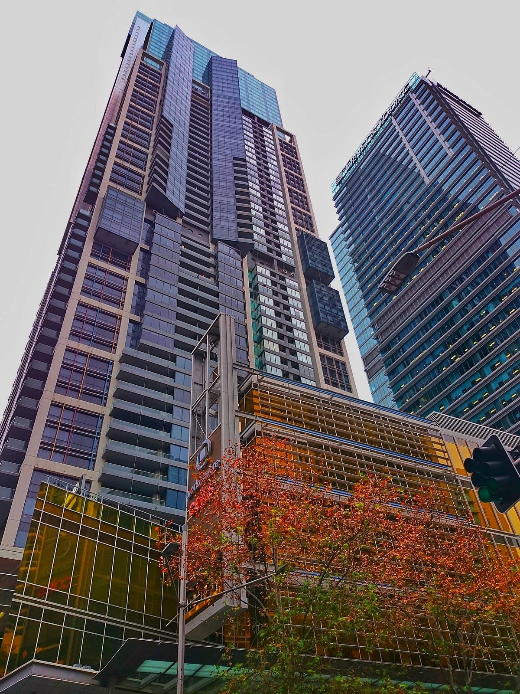

Sydney photos

Crown Sydney
Crown Sydney (also referred to as One Barangaroo), is a skyscraper in Barangaroo, New South Wales, Australia. Developed by Crown Resorts, it mainly comprises a hotel, residential apartments, and a casino. It was designed by WilkinsonEyre, standing at a height of 271.3 m (890 ft) with 75 floors, making it the tallest building in Sydney and 4th tallest building in Australia.

Australia Square Tower
The building was first conceived in 1961,and its final design by Harry Seidler & Associates was in 1964 after collaboration with structural engineer Pier Luigi Nervi. Today, it remains a landmark building in Sydney and is regarded as iconic to Australian architecture. It has even been described as the most beautiful building in Australia, though it is not without criticism.The outstanding feature of the Square is the Tower Building; from its completion in 1967 until 1976 was the tallest building in Sydney.

Sydney Tower Eye
Sydney Tower is Sydney's tallest structure and the second tallest observation tower in the Southern Hemisphere. The name Sydney Tower has become common in daily usage; however, the tower has been variously known as Centrepoint Tower (or just Centrepoint) and AMP Tower, and colloquially as Flower Tower, Glower Tower, and Big Poke. The tower stands 305 m (1,001 ft) above the Sydney central business district (CBD), located on Market Street, between Pitt and Castlereagh Streets. It is accessible from the Pitt Street Mall, Market Street or Castlereagh Street and sits above the Westfield Sydney (formerly Centrepoint) shopping centre. The tower is open to the public, and is one of the most prominent tourist attractions in the city, being visible from a number of vantage points throughout town and from adjoining suburbs.

Queen Victoria Building
The Queen Victoria Building (abbreviated as the QVB) is a heritage-listed late-nineteenth-century building designed by the architect George McRae located at 429–481 George Street in the Sydney central business district, in the Australian state of New South Wales. The Romanesque Revival building was constructed between 1893 and 1898 and is 30 metres (98 ft) wide by 190 metres (620 ft) long.
